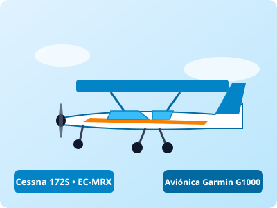
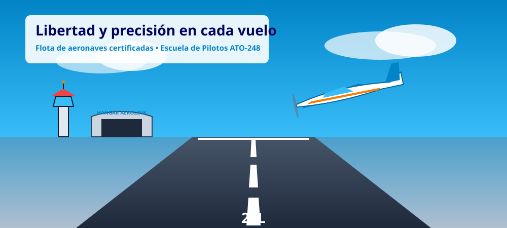
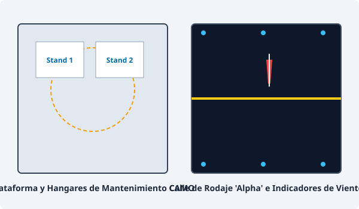

Cessna 172S Skyhawk
El monomotor más seguro y popular del mundo. Equipado con cabina de cristal (*Glass Cockpit*) y piloto automático integrado.
Última inspección 100h:
AeroLink es un centro de operaciones aéreas y organización de entrenamiento aprobada (ATO-248) certificada por la Agencia Estatal de Seguridad Aérea (AESA). Ofrecemos alquiler de aeronaves para pilotos titulados, formación PPL(A) y experiencias de divulgación técnica.

En AeroLink la seguridad aérea no es un objetivo negociable, sino la base innegociable de cada despegue. Todas nuestras aeronaves operan bajo un estricto programa de control de mantenimiento continuo supervisado por una organización certificada CAMO.
"Un buen piloto es aquel que utiliza su criterio superior para evitar entrar en situaciones donde requeriría demostrar su habilidad superior."
— Comandante Francisco Varela, Jefe de Instrucción de AeroLink
Cada aparato cuenta con certificación acústica, registro de horas al minuto, revisión de 50 y 100 horas al día y seguro de responsabilidad aeronáutica con cobertura europea EASA Regulation (EC) 785/2004.

Accede a muestras multimedia reales para familiarizarte con las maniobras habituales y la fraseología estándar aeronáutica:
Grabación desde cabina mostrando el procedimiento de entrada al circuito de tránsito y aterrizaje en pista 24L.
Tono de audio y simulación de comunicaciones VHF en banda aérea (118.250 MHz).
Antes de cualquier autorización de vuelo, el comandante debe comprobar la validez de los reportes METAR y TAF del aeródromo de origen, destino y alternativos:
LECU 221000Z 24008KT 9999 FEW035 21/08 Q1018 NOSIGDesglose oficial: Viento de rumbo 240 grados a 8 nudos, visibilidad superior a 10 kilómetros, pocas nubes a 3.500 pies, temperatura 21°C, reglaje altimétrico QNH 1018 hPa, sin cambios significativos.
Las condiciones actuales se clasifican bajo reglas de vuelo visual: VFR óptimo.